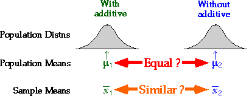
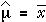
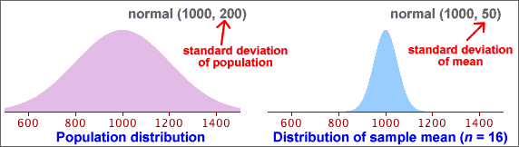
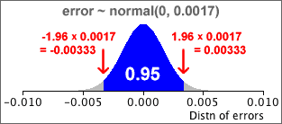
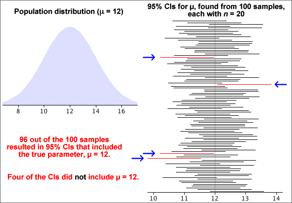
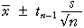
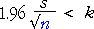
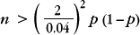
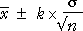

If you don't want to print now,
Inference about a population
Data are usually collected to provide information about some population or process underlying the data. The data are often modelled as a random sample from this population.
More generally, inference is applicable to any situation where data are obtained through a random mechanism. We may understand some aspects of the process that generated the data (our model for the data-collection process), but other aspects of this process must usually be estimated from data that have been collected — inference.
Estimating parameters
Because of the limited amount of sample data available, we usually restrict attention to a few specific numerical characteristics of the population distribution — parameters.
After identifying the population parameters that are of most interest — for example the distribution's mean, µ, or the proportion of values in a category, π, — we can usually estimate these values using the corresponding summary statistics from the sample. This is called inference about the parameter.
HIV infection rates
Researchers in the late 1980s collected data from a sample of 4,955 homosexual men in Baltimore, Chicago, Los Angeles and Pittsburgh. We can estimate the proportion infected by the HIV virus in all homosexual men in these four cities with the sample proportion of infected men (1,883 out of 4,955)
 = p = 1883/4955 = 0.380
= p = 1883/4955 = 0.380
Ewes in region
An official from the Ministry of Agriculture wants to estimate the average number of ewes in a region's farms that are available for lambing in the spring. Data were collected from a random sample of 100 farms from the 3,535 in the region.
There was a total of 26,360 ewes in the sampled farms, so the mean number of ewes per farm was 263.6. This provides an estimate of the average in the whole region,
 =
=  = 263.6 ewes
= 263.6 ewes
It also allows us to estimate the total number of ewes in the region,

Comparing beers
A brewery wishes to assess the effect of an additive on the alcohol content of its premium beer. Several batches are brewed, both with and without the additive, and the alcohol content of each batch is recorded.
Here there are two underlying populations — distributions describing the alcohol content of beer with and without the additive. The shapes of these distributions could potentially differ in various ways, but the brewer is mostly interested in whether the additive changes the mean alcohol content:

The sample means provide estimates of the corresponding population means and are the basis for answering the question.
The difference in sample means is an estimate of the difference between the unknown population means.
Error in an estimate
When we use a summary statistic from a random sample to estimate a population parameter, the estimate will usually not be exactly the same as the parameter. The error is the difference between the parameter and its estimate.
| Parameter | Sample statistic | Error |
|---|---|---|
| population mean, µ | sample mean, |
|
| population proportion, π | sample proportion, p | p - π |
Silkworm poisoning
Silkworms must be killed after spinning their cocoons since the silk is damaged when the moths break free. An experiment was conducted to estimate the mean survival time of silkworm larvae after poisoning with sodium arsenate.

Since we are not interested in the specific 80 silkworms, we estimate that the population mean survival time is 272.6 seconds.
How big is the estimation error likely to be?
Error distribution
When a sample statistic (such as  or p ) is used
to estimate a population parameter, (µ or π)
there is an error,
or p ) is used
to estimate a population parameter, (µ or π)
there is an error,
error = (estimate - parameter )
Since the error depends on random sample data, it is a random quantity and has a distribution,
Although we cannot determine the actual error when there is only a single sample, it is often possible to find properties of its distribution.
For many types of estimate, we can find the error distribution or an approximation to it.
Target of small errors
Consider two possible sample statistics that could be used to estimate the centre of a symmetric population distribution — the sample mean and sample median. For each, there is an error,
error for mean =  - µ
- µ
error for median = median - µ
The best estimator will be the one whose estimation erro is usually "closer to zero". This corresponds to two desirable characteristics of the error distribution.
Centred on zero
Ideally, we want the error distribution to be centred on zero. Such an estimator is called unbiased.

Sample means and proportions are unbiased estimators of the corresponding population parameters.
Small spread
Ideally, we also want error distribution to be tightly concentrated on zero — i.e. to have a small spread.

We call the standard deviation of the error distribution the standard error of the estimator. We ideally want an estimator with a small standard error.
standard error = standard deviation of the error
Note also that
standard error = standard deviation of the estimator
so a good estimator is one with a small standard deviation.
Describing accuracy with an interval estimate
Reporting a single value as a parameter estimate (a point estimate) does not convey any information about the estimator's accuracy — i.e. the likely size of the estimation error.
It is better to give an interval of values within which we are confident that the parameter will lie — an interval estimate.
Will an interval estimate include the actual parameter value?
If an interval estimate is too narrow, there will be very little chance of it containing the true parameter value, but intervals that are too wide do not convey much information.

We will later describe how to quantify this idea of "confidence".
Distribution of the sample mean
A population mean, µ, is usually estimated by the mean from a random sample.

If the population standard deviation is σ,  has a distribution with
has a distribution with
| = μ |
| = |
and is approximately normal if the population is normal or n is reasonably large.
Distribution of the estimation error
Since the error in the estimate is simply the sample mean minus a constant (µ), its distribution has the same shape but is centred on zero,
| error = |
) |

Standard error and bias
When the sample mean is used to estimate a population mean, µ, the estimator is unbiased.
error = μerror = 0
The estimator's standard error is the standard deviation of the error distribution,
| standard error = σerror = |
Note that the error distribution does not depend on the value of µ. We can therefore evaluate the standard error provided the value of σ is known.
Example
We know that a particular type of measurement, X, has a normal distribution with known standard deviation σ = 0.0068 but unknown mean µ. A random sample of n = 16 values has sample mean 0.0724 and this is used to estimate µ . We can then find the distribution of errors that will arise using:
| error ~ normal (0, σ = | ) |
For sample size n = 16, this error distribution is:

Interpreting the standard error
The 70-95-100 rule-of-thumb provides a useful interpretation of the standard error of an estimator.
There is approx 95% probability that the error is within 2SE of zero and it is almost certainly within 3SE of zero.
Note that the term standard error is often abbreviated to SE.
Example
A random sample of n values is taken from a population with distribution,
X ~ normal (μ , σ = 0.0068)
giving a sample mean that is 0.0724. This is our estimate of µ. The standard error of this estimate is
| standard error = SE = |
The error in our estimate has about 95% chance of being within 2SE = 0.0034 of µ and is almost certain to be within 3SE = 0.0051 of it.
Using an estimate of σ
The error distribution for a sample mean has:
error = μerror = 0
| standard error = σerror = |
In practice, the value of σ is usually unknown and must be replaced by the sample standard deviation, s, in the formula:
| standard error = σerror = |
Example

Difference between standard error and standard deviation
The standard deviation of a sample mean is closely related to the population's standard deviation:
| = |
For example,

There is a similar relationship between the standard deviation of a sample and the standard error of the mean. Do not confuse them:

Common mistakes in interpretation
Warning
Be particularly careful when reading journal articles. Some papers use standard deviations (SD) to describe the distribution of variables, but others give the standard errors (SE) of the means of the variables.
Comparison of estimators
Most estimators that are used in statistics have error distributions that are centred on zero — they are unbiased. The standard errors of the estimators are therefore the most important way to compare their accuracy.
Comparison of mean and median
We will use a simulation to investigate whether the mean or median is the better estimator of the mean, µ, of a normal distribution. Samples of 20 values were selected from a normal population with mean µ = 1000. The stacked dot plot on the left below shows the errors when the mean was used to estimate µ, and the corresponding errors when the median was used are shown on the right.
Since the errors for the sample mean tend to be closer to zero than those for the median, we conclude that the sample mean is a better estimator of µ then the median.
This comparison can also be based on the standard deviations of these distributions — the standard errors of the two estimators.
Biased estimators
In statistics, we mostly use estimators that are unbiased — their error distributions are centred on zero. However you may sometimes meet estimators that are biased — the mean of their error distribution (the bias) is not zero.
The diagram below shows the properties of the mean and median of samples of size n = 16 from a skew population distribution. The sample mean is an unbiased estimator of the population mean, µ, but the median is a biased estimator — it usually underestimate µ. (This should be no surprise since the median is less than the mean in skew data sets with a long right tail.)

Although bias is undesirable, a little bias may be acceptable in an estimator if its standard error is also small.
95% bounds on the error
If we know the error distribution of an estimator (or an approximation to it), we can find a range of values within which the error will lie with probability 0.95,

Expressed in an equation,
Prob ( -e* < error < e* ) = 0.95
95% confidence interval
Since the error is the difference between the estimator and the unknown parameter, this can be rewritten as:
Prob ( estimate - e* < parameter < estimate + e* ) = 0.95
The interval
estimate - e* to estimate + e*
is called a 95% confidence interval and we have 95% confidence that it will include the unknown parameter value.
Confidence interval from standard error
The 70-95-100 rule of thumb states that about 95% of values in most distributions are within 2 standard deviations of the mean. For unbiased estimators (with zero mean), we therefore have the approximation:

This leads to the approximate 95% confidence interval
estimate - 2 s.e. to estimate + 2 s.e.
Since the standard error of most commonly used estimators can be readily found by either a formula or statistical software, a 95% confidence interval can be easily found for most estimators.
Refinements
If we can only find an approximation to the error distribution, the method above would only give an approximate 95% confidence interval. The '± 2 s.e.' approximation is a useful guide in most circumstances, but we will refine this type of confidence interval for some estimators to make the confidence level closer to 95%.
Estimating a population mean
We first examine how to estimate the mean, µ, of a population when the population standard deviation, σ, is a known value. (In practice, σ is usually unknown, but we leave this until later in this section.)
The sample mean,  , is approximately normal, with
, is approximately normal, with
| = μ |
| = |
When  is used to estimate µ, the error is approximately
is used to estimate µ, the error is approximately
| error = |
) |
so the standard error of  is
is  .
.
95% bounds for the error
Applying the 70-95-100 rule of thumb to the error distribution,
| Prob( error is between ± 2 | ) is approximately 0.95 |
This can be refined using the properties of the normal distribution to get an exact probability of 0.95.
| Prob( error is between ± 1.96 | ) = 0.95 |
95% confidence interval
Since  will be within 1.96
will be within 1.96  of µ
with probability 0.95, we are 95% confident that µ
is in the interval
of µ
with probability 0.95, we are 95% confident that µ
is in the interval

This is a 95% confidence interval for µ and the interval has a confidence level of 0.95.
Example
Consider a type of measurement that is normally distributed with known σ but unknown mean, µ:
X ~ normal (μ , σ = 0.0068)
The mean of a random sample of n = 16 values will therefore be normally distributed with standard error
| = 0.0068 / 4 = 0.0017 |
From this, we can obtain bounds on the error:

P(-0.00333 < error < 0.00333) = 0.95
If the sample data are:

then a 95% confidence interval for µ would be
0.74362 ± 0.00333 = 0.74029 to 0.74695
We are 95% confident that µ is between 0.74029 and 0.74695.
Interpretation of a confidence interval
95% confidence intervals are found from sample data and are therefore random, so they do not always include the parameter that is being estimated.
The diagram below is based on a simulation of random samples of n = 20 values from a normal population. The 95% confidence intervals for µ were calculated using the known population standard deviation, σ = 2.

A few random samples resulted in CIs that did not include µ = 12 (the population mean used to generate the simulated samples). If we had continued the simulation with more samples, eventually 95% of the CIs would have included the true parameter value.
In practice, we only have a single sample, and we do not know whether or not it is one of the 'lucky 95%' whose confidence intervals include µ, but we are 95% confident that it is.
Knowing that confidence intervals obtained in this way will usually include it is very helpful. In practice,...
Being right most of the time is the best one can hope for, since there is always the possibility of being misled by an unlucky sample.
Unknown population standard deviation
If we know the value of the population standard deviation, σ, an interval estimate of the form

has a confidence level of 0.95 — i.e. it is a 95% confidence interval.
In practice however, the value of σ is rarely known.
It is tempting to simply replace σ in the formula by its sample equivalent, s.

However replacing σ with s makes the confidence interval more variable and this means that it is less likely include µ — the confidence level is less than 95%. If the sample size, n, is large, the confidence level is close to 95%, but with smaller sample sizes the true confidence level can be much less than the target 95%. For example,
The confidence interval must be modified if σ is unknown.
Confidence interval using a t-value
The interval estimate

has a lower confidence level than 95%. In order to achieve a 95% confidence level, the interval must be widened. This is done by replacing 1.96 by a slightly larger number:

The replacement constant tn-1 is a value greater than 1.96 that depends on the sample size, n. The value n - 1 is called the degrees of freedom of the constant.

For any number of degrees of freedom, the t-value can be obtained from a table, graph or computer software.
Simulation of properties
The diagram below shows results from a simulation of 100 samples, each of size n = 20, from a normal population. We now treat the population standard deviation, s, as being unknown and find a 95% confidence interval for µ from each sample using the formula
where t19 = 2.093.

Approximately 95% of these confidence intervals include the actual parameter value, µ = 12. If more simulations had been conducted, the proportion of intervals including µ would have been closer to 95%.
Note that the confidence intervals in the simulation do not all have the same width since the CI width depends on s and that varies from sample to sample.
Interpretation of a confidence interval
In practice we only have a single sample (and a single confidence interval). We do not know whether it actually includes the unknown population mean, but knowing that confidence intervals obtained in this way will usually include µ is very helpful. In practice,...
Being right most of the time is the best one can hope for, since there is always the possibility of being misled by an unlucky sample.
The method that we use to obtain the confidence interval has probability 0.95 of including µ. We cannot tell whether the single interval that we evaluate from our data set is one of these 'lucky' intervals, but knowing that the method works so often gives us 95% confidence in it.
General framework
A similar approach to that for estimating a population mean is used for estimating population proportions and other parameters.
estimate - 2 s.e. to estimate + 2 s.e.
Population proportions and probabilities
Categorical data are usually treated as a random sample from some population. We concentrate on a single category which we will call success and we collectively call the other categories failures. The population proportion of successes is denoted by π. It is also the probability that a single randomly selected value from the population is a success.
We are interested in estimating an underlying probability, π. Although it is more general to treat π as a probability, it is usually easier to interpret π as a 'population proportion'.
Parameter estimate and error
The sample proportion of successes is denoted by p and is an estimate of π.

Since p is based on a random sample, it varies from sample to sample and has a distribution. The estimation error is:
error = p - π
Since π is unknown, we never know the value of the error, but we can find its approximate distribution. This will allow us to assess the likely size of the error.
Distribution of proportion
The proportion of successes from a random sample with probability π of success, p , has a distribution with mean and standard deviation
μp = π
| σp = |
Distribution of estimation error
The estimation error is p - π and its distribution has the same shape as that of p, but is shifted to have mean zero. The bias and standard error are therefore
bias = μerror = 0
| standard error = σerror = |
Standard error from data
Unfortunately, the formula for the standard error of p involves π, and this is unknown in practical problems. To get a numerical value for the standard error, we therefore replace π with our best estimate of its value, p .
bias = μerror = 0
| standard error = σerror = |
Example
In a random sample of n = 36 values, there were x = 17 successes. Our best estimate of π is the sample proportion, p = 17/36. Using this estimate, the distribution of the number of successes in similar samples would be
X ~ binomial (n = 36, π = 17/36)

The proportion of successes in similar samples would have a scaled form of this distribution

and the error distribution would shift this to have mean zero:

From this error distribution, it is unlikely that our estimate of the proportion of successes (17/36) would be in error by more than 0.2.
Normal approximation to the error distribution
If the sample size, n, is large enough, the binomial distribution is approximately normal, so we have the approximation
| error = p − π ~ normal (0, | ) |
Example

The error distribution (and standard error) give a good indication of how far our point estimate (0.554) will be from the true proportion of adults in the park.
95% bounds on the estimation error
When sample proportion p is used to estimate a corresponding population proportion, π, the resulting error has the approximate distribution,
| error = p − π ~ normal (0, | ) |
Replacing π by our best estimate, p , and using the properties of the normal distribution,
| Prob( error is between ± 2 | ) ≈ 0.95 |
95% confidence interval
A 95% confidence interval for π is therefore...

Example
In a random sample of n = 36 values, there were x = 17 successes. We estimate the population proportion, π, with p = 17/36 = 0.472. The approximate normal distribution for the errors is shown below.

A 95% confidence interval for π is therefore
0.472 ± 0.166
i.e. 0.306 to 0.638
We are therefore 95% confident that the population proportion of successes is between 30.6% and 63.8%. A sample size of n = 36 is clearly too small to give a very accurate estimate.
Properties
As with all other confidence intervals, a 95% confidence interval for a population proportion, π, is random. Although it correctly includes π in 95% of random samples, there is a 5% probability that it will not include the true value of π.
The simulation below took 100 random samples of size n = 200 from a population with π = 0.6. Most of the confidence intervals included π = 0.6, but some did not. If the simulation was repeated many more times, the proportion including 0.6 would be close to 0.95.

In practice, you only have a single sample and a single confidence interval, but we have "95% confidence" that it will include the true (and usually unknown) value of π.
Problems with small sample sizes
This confidence interval for π was based on a normal approximation to the distribution of the sample proportion. If the sample size, n, is small or π is close to either 0 or 1, this normal approximation is inaccurate and the confidence level for the interval can be considerably less than 95%.
Many textbooks give the following guideline for using the confidence interval:
Only use the confidence interval for π
when all of the following hold...
|
These guidelines can be relaxed a little provided you accept that the confidence level may be a little less than 95%.
Interpretation of a confidence interval
We never know in practice whether or not the confidence interval that we obtain actually includes π.
Being right most of the time is the best one can hope for, since there is always the possibility of being misled by an unlucky sample.
The method that we use to obtain the confidence interval has probability 0.95 of including π. We cannot tell whether the single interval that we evaluate from our data set is one of these 'lucky' intervals, but knowing that the method works so often gives us 95% confidence in this interval.
Example

Worst-case standard error
The standard error of a sample proportion, p, has standard error

This is greatest when π = 0.5 and this provides a worst-case value for the standard error. Whatever the value of π, the standard error of the estimate will be less than

The '±' values of the 95% confidence intervals for all proportions reported in the poll will be less than this value — sometimes considerably less.
How much data do I need to collect?
Consider estimation of a population mean, µ, from a random sample of size n. A 95% confidence interval will be of the form
If we want our estimate to be within k of µ with probability 0.95, then we need n to be large enough that

Provided we can make a reasonable guess at the likely value of the sample standard deviation, s, it is possible to determine the necessary sample size by trial-and-error in the above inequality.
Equation for the sample size
If n is reasonably large the t-value in the inequality will be approximately 1.96, so

This inequality can be re-written in the form

In practice, it is best to increase n a little over this value in case the sample standard deviation was wrongly guessed.
Example
If we expect that a particular type of measurement will have a standard deviation of about 8, and we want to estimate its mean, µ, to within 2 of its correct value with probability 0.95, the sample size should be

This suggests a sample size of at least 62. (The more accurate trial-and-error method using a t-value would give a sample size of 64.)
How much data do I need to collect?
A 95% confidence interval for a probability π is of the form

If we want our estimate to be within k of π with probability 0.95, then we need n to be large enough that

In order to use this inequality, we need a guess at the value of p — it does not need to be particularly accurate.
A small pilot survey is often conducted to obtain a preliminary estimate for the proportion.
If we can do no better, the 'worst-case' value, p = 0.5 can be used, but the resulting sample size may be higher than needed.
Equation for the sample size
The inequality can be re-written in the form

Example
To estimate a proportion with 95% confidence of being within 0.04 of the correct value, we need

Without a better guess at the value of p, we can use p = 0.5, giving a sample size of 625 or more. If we had a rough idea of the likely value of p, the sample size could be reduced from this worst-case value.
Confidence interval for a mean
If the population standard deviation, σ, is a known value, a confidence interval for a population mean, µ has the form

The value k arises from the standard normal distribution,

The value k = 1.96 gives a confidence level of 95%, but different confidence levels can be found with other values of k.
| k | Confidence level |
|---|---|
| 1 | 0.683 |
| 2 | 0.954 |
| 3 | 0.997 |
| 1.645 | 0.90 |
| 1.960 | 0.95 |
| 2.576 | 0.99 |
Although 95% confidence intervals are most commonly reported, sometimes k is chosen to give a 90% or 99% confidence interval.
Estimating a probability with different confidence levels
A 95% confidence interval for a probability, π, has the form

Replacing the constant 2 with 1.645 gives an interval with approximately a 90% confidence level, and using 2.576 results in a 99% confidence level.
Estimating a population mean (unknown standard deviation)
When the population standard deviation, σ, is unknown, a 95% confidence interval for µ has the form
where tn-1 is obtained from a table. Changing the confidence level to 90% or 99% involves changing this constant. The appropriate value can again be obtained from a table. (We give no further details here.)